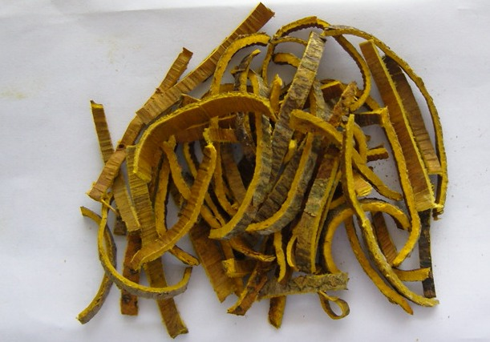

Huángbǎi · Phellodendron Bark黄柏
Phellodendri Chinensis Cortex · Heat-clearing herbs: herbs that clear heat and dry dampnessPhellodendri Chinensis Cortex · 清热药·清热燥湿药

,_tree_(SaatPilot).jpg){kind=link}


- Flavour · nature性味
- bitter; cold苦，寒
- Channels归经
- Kidney, Bladder肾、膀胱经
- Direction升降浮沉
- Bitter, cold and descending; clears heat, dries dampness, drains fire and resolves toxins. Its principal action is in the lower burner, and it also clears deficiency heat. Salt processing enhances its yin-nourishing and fire-draining action.苦寒沉降，清热燥湿、泻火解毒；作用重点在下焦，兼能退虚热，盐炙后增强滋阴降火作用
- Toxicity毒性
- Non-toxic无毒
- Dose (pharmacopoeia)用量（药典）
- 3–12 g (ceiling 12 g)（上限 12 克）
Decocted. Use an appropriate amount externally. Raw Huang Bai is generally used to clear heat, dry dampness and resolve toxins; salt-processed Huang Bai is preferred for nourishing yin and draining fire.煎服。外用适量。清热燥湿、泻火解毒一般用生黄柏；滋阴降火宜盐炙黄柏。 - Pregnancy孕期
- Caution in pregnancy孕妇慎用 The 2020 Chinese Pharmacopoeia entry for Huang Bai has no precautions section and lists no pregnancy caution. This site still advises caution, because Health Canada's TCMI monograph requires every product it covers to warn against use during pregnancy or breastfeeding. Huang Bai and formulas containing it should not be self-administered during pregnancy. A missing pharmacopoeial entry does not prove safety in pregnancy.《中国药典》2020 年版黄柏项下未设「注意」，未列孕期条；本站孕期从严按慎用，依据是加拿大卫生部 TCMI 专论要求全部收录产品标注孕期或哺乳期勿用。孕期不应自行服用黄柏或含黄柏的中药复方。药典未列不等于已证明孕期安全。
- Health Canada加拿大卫生部
- Health Canada: monograph加拿大卫生部：有专论 Health Canada's Natural Health Products Ingredients Database TCMI monograph includes Phellodendron chinense, under the names Huang bo and Huang bai, with the medicinal ingredient name Cortex Phellodendri Chinensis, in Table 1: General Medicinal Ingredients. The monograph requires product labelling to state that the ingredient must not be used during pregnancy or breastfeeding; people taking prescription medicines or living with serious medical conditions or acute infections should consult a healthcare professional before use; and use should be discontinued with medical attention sought if symptoms persist or worsen. This entry is in Table 1 and should not be misrepresented as a specific restriction under Table 3 or Table 4.加拿大卫生部 NHPID 的 Traditional Chinese Medicine Ingredients（TCMI）专论收录 Phellodendron chinense，名称包括 Huang bo、Huang bai，药材名为 Cortex Phellodendri Chinensis，列于 Table 1：General Medicinal Ingredients。该原料专论要求产品标注：孕期或哺乳期勿用；正在服用处方药、有严重疾病或急性感染者，使用前咨询医务人员；症状持续或加重时停止使用并就医。该条目属于 Table 1，不应误写成 Table 3 或 Table 4 的特定限制类别。
- Conservation资源与保护
- Huang Bai is obtained from the bark of Phellodendron trees in the Rutaceae family. It is not among the prohibited or specially trade-controlled traditional medicinal materials listed in this task, such as rhinoceros horn, tiger bone, pangolin scales, musk or bear bile. The supplied references do not establish that it is an endangered or prohibited medicinal material. Procurement should still verify the species, origin, quality and legality of the supply.黄柏来源于芸香科黄皮树或黄檗的树皮，不属于本题所列犀角、虎骨、穿山甲、麝香、熊胆等禁用或受特别贸易管制的传统药材类别。未见本题提供资料支持将其认定为濒危禁用药材。实际采购应核对物种、产地、药材质量及合法供应来源。
- Source来源
- Phellodendron chinense C.K.Schneid.; Phellodendron amurense Rupr.. Dried bark of Phellodendron chinense or Phellodendron amurense, family RutaceaePhellodendron chinense C.K.Schneid.（黄皮树，川黄柏）；Phellodendron amurense Rupr.（黄檗，关黄柏）。芸香科植物黄皮树或黄檗的干燥树皮
Traditional actions and indications功效与主治（传统）
🏛 Traditional statements, not efficacy claims; the modern evidence is graded further down.以下为传统说法，不是疗效主张；现代证据见下文分级。
- Clears heat and dries dampness清热燥湿
- Drains fire and clears steaming bone heat泻火除蒸
- Resolves toxins and treats sores解毒疗疮
Damp-heat dysentery and diarrhoea; jaundice with dark or reddish urine; vaginal discharge and genital itching; painful, difficult urination due to heat; beriberi and weakness or paralysis of the lower limbs; hectic fever, night sweats and seminal emission due to deficiency heat; sores, swellings and abscesses; eczema and weeping skin lesions. Salt-processed Huang Bai is used for fire arising from yin deficiency, night sweats and steaming bone heat.湿热泻痢、黄疸尿赤；带下阴痒；热淋涩痛；脚气痿躄；骨蒸劳热、盗汗、遗精；疮疡肿毒；湿疹、湿疮。盐黄柏用于阴虚火旺、盗汗骨蒸。
How to recognise it怎么认
Growing植株 A deciduous tree with thick bark. The outer bark is grey-brown or greyish-yellow, with irregular longitudinal cracks and grooves; the inner bark is distinctly bright yellow. The leaves are opposite, odd-pinnate compounds with ovate-lanceolate or oblong leaflets bearing fine serrations. The trees are dioecious, with small yellow-green flowers in panicles. The fruits are nearly spherical, berry-like drupes that turn purplish-black when mature. Chuan Huang Bai comes from Phellodendron chinense, while Guan Huang Bai comes from Phellodendron amurense; the distinctly yellow inner bark is an important identification feature of both.落叶乔木，树皮厚，外表灰褐色或灰黄色，具有不规则纵裂及沟纹，内皮鲜黄色，黄色特征明显。树叶为奇数羽状复叶，对生小叶通常呈卵状披针形或长椭圆形，叶缘有细锯齿。雌雄异株，花小，黄绿色，圆锥花序；果实为近球形浆果状核果，成熟后呈紫黑色。川黄柏来源于黄皮树，关黄柏来源于黄檗，两者树皮均以黄色内皮为主要识别特征。
Decoction pieces饮片 Chuan Huang Bai commonly occurs as flat or shallow-grooved bark pieces, whereas Guan Huang Bai is often rolled into single or double tubes. The outer surface is yellow-brown or grey-brown, with longitudinal grooves and lenticels. The inner surface is dark yellow or yellow-brown, with fine longitudinal striations. The cut surface is yellow or yellowish-green and distinctly fibrous, sometimes separating into layers. The bark is relatively hard, with a fibrous fracture, a faint smell and an intensely bitter taste. Processed slices are usually irregular strips showing yellow to yellowish-green cut surfaces.川黄柏通常呈板片状或浅槽状，关黄柏多呈卷筒状或双卷筒状。外表面黄褐色或灰褐色，有纵沟纹及皮孔，内表面暗黄色或黄棕色，具细密纵纹。切面黄色或黄绿色，纤维性较明显，易呈层片状剥离。质较坚硬，折断面纤维性，气微，味极苦。饮片通常为不规则丝片或条片，表面可见黄色至黄绿色切面。
Processing炮制
- Raw Huang Bai生黄柏：: The bark is cleaned, moistened thoroughly, cut into strips and dried. Its bitter and cold properties are prominent, with emphasis on clearing heat, drying dampness and resolving toxins.除去杂质，洗净，润透，切丝，干燥。苦寒之性较明显，侧重清热燥湿、泻火解毒。
- Salt-processed Huang Bai盐黄柏：: Huang Bai strips are stir-fried with salt water and dried. Salt processing directs the herb toward the kidney channel and enhances its yin-nourishing and fire-draining action, commonly for yin deficiency with fire excess and steaming bone heat.取黄柏丝，照盐水炙法炒干。引药入肾，增强滋阴降火作用，常用于阴虚火旺、骨蒸劳热。
Cautions and incompatibilities使用注意与配伍禁忌
Use cautiously in people with spleen and stomach deficiency-cold, and avoid prolonged or excessive use. Because Huang Bai is bitter and cold, excessive or long-term use may aggravate symptoms associated with deficiency-cold of the digestive system. Use cautiously in pregnancy (not listed in the pharmacopoeia); Health Canada's TCMI monograph requires all products it covers to warn against use during pregnancy and breastfeeding. Watch for skin irritation or allergic reactions with external application. The pharmacopoeial materials specified for this entry do not provide an explicit toxicity classification; the value none in this record should not be interpreted as proof that every dose or route of administration is harmless.脾胃虚寒者慎用，避免长期或超剂量使用。黄柏苦寒，过量或长期使用可能加重脾胃虚寒相关的不适。孕期从严按慎用（药典未列）；加拿大卫生部 TCMI 专论要求全部收录产品标注孕期及哺乳期勿用。外用时注意皮肤刺激或过敏反应。黄柏药材的毒性等级在本题所列药典资料中未提供明确的毒性分类，不应将本档的 none 理解为已经证明任何剂量、任何使用方式均无毒。
Interactions with medicines与西药的相互作用
The specialized references supplied for this entry do not establish a reliable clinical interaction between Huang Bai as a single crude herb and any specific Western medicine. The available evidence includes human research on a compound topical preparation, a safety study of oral decoctions containing both Coptis and Phellodendron, and animal or in vitro research. These findings cannot establish drug interactions for Huang Bai alone. The NCCIH reference concerning ginseng and warfarin does not apply to Huang Bai and is not used to infer an interaction. People taking prescription medicines should consult a healthcare professional before use, as required by Health Canada's monograph.本题提供的专门文献中，没有足以确认黄柏饮片与某一种西药存在临床相互作用的可靠证据。现有资料包括复方外用制剂的人体研究、黄连与黄柏口服合煎的安全性研究，以及动物或体外研究；这些不能直接确立黄柏单味饮片与处方药之间的相互作用。NCCIH 所列人参与华法林资料不适用于黄柏，故不据此推断黄柏与华法林的相互作用。服用处方药者应遵照加拿大卫生部专论要求，使用前咨询医务人员。
Modern research, graded现代研究（分级）
- E2 A 2020 multicentre human clinical study investigated Cortex Phellodendri Compound Fluid (CPCF), a compound topical preparation containing Phellodendron bark, for diabetic foot ulcers. Its abstract reported ulcer healing and increased growth-factor concentrations, and concluded that the compound treatment was safe and reliable. The research concerned a compound topical preparation, not Huang Bai as a single crude herb, so the findings cannot establish the same clinical effects for Huang Bai alone.2020 年多中心人体临床研究考察了黄柏复方外用液（Cortex Phellodendri Compound Fluid，CPCF）用于糖尿病足溃疡的治疗，摘要报告该复方外用治疗可促进溃疡愈合，并增加生长因子浓度，研究结论认为其安全可靠。研究对象是含黄柏的复方外用制剂，而不是黄柏单味饮片；不能据此认定单味黄柏具有相同临床效果。
- E3 A 2012 human clinical study reassessed the safety of Coptis and Phellodendron in people with chronic haematological diseases. The abstract concluded that oral decoctions containing both herbs were safe when used according to traditional dosages and indications. The study investigated a two-herb decoction and does not independently establish the safety of Huang Bai for every person with a haematological condition or at every dosage.2012 年人体临床研究重新评估了黄连与黄柏在慢性血液系统疾病患者中的使用安全性。摘要结论认为，在传统剂量和适应证范围内，黄连与黄柏口服合煎是安全的。该研究考察的是两味药组成的口服煎剂，不能单独证明黄柏对所有血液疾病患者或所有剂量均安全。
In the classics古籍原文
「蘗木味苦寒。主治五臟腸胃中結氣熱，黃疸，腸痔，止泄利，女子漏下赤白，陰陽蝕瘡。根，一名檀桓。生山谷。」——神农本草经
Shennong Bencao Jing (Divine Farmer's Materia Medica)
English version coming《神农本草经》以「蘗木」为名记载黄柏，明确指出其味苦性寒，主治五脏肠胃结热、黄疸、肠痔、泄利及妇科漏下等。这里的《本经》药名是「檗木」，后世逐渐以黄柏作为通行药名。原文还记载其根另名「檀桓」，生于山谷。古籍所载为传统本草认识，不应直接等同于现代临床适应证。
Where it is used: the web串联：它在哪些方里、连到哪里
Classical formulas (Shanghan, Jingui)经方（伤寒、金匮）
| Formula方 | Role角色 | Dose: original / today剂量：原书／今用 | Partners in the formula同方配伍 |
|---|---|---|---|
| Pulsatilla Decoction白头翁汤 | Minister臣 | original text: see the Chinese original三两 | Bai Tou Weng (pulsatilla root)白头翁 · Huang Lian (coptis rhizome)黄连 · Qin Pi (ash bark)秦皮 |
| Gardenia and Phellodendron Decoction栀子柏皮汤 | Minister臣 | original text: see the Chinese original二两 | Zhi Zi (gardenia fruit)栀子 · Gāncǎo (Licorice root)甘草 |
| Mume Pill乌梅丸 | Assistant佐 | original text: see the Chinese original六两 | Wu Mei (smoked plum)乌梅 · Xìxīn (Asarum root and rhizome)细辛 · Gānjiāng (Dried ginger)干姜 · Huang Lian (coptis rhizome)黄连 · Fùzǐ (Aconite lateral root (processed))附子 · Dāngguī (Chinese Angelica Root)当归 · Shu Jiao (Sichuan pepper)蜀椒 · Guìzhī (Cassia twig)桂枝 · Rénshēn (Ginseng (Asian))人参 |
Later formulas (Song to Qing)时方（宋元明清）
| Formula方 | Role角色 | Dose: original / today剂量：原书／今用 | Partners in the formula同方配伍 |
|---|---|---|---|
| Two-Marvel Powder二妙散 | Monarch君 | original text: see the Chinese original原文未注（今教材多作等分） | Cang Zhu (atractylodes rhizome)苍术 |
| Hidden Tiger Pill虎潜丸 | Monarch君 | original text: see the Chinese original原文此处未单独标注（盐、酒炒） | Zhīmǔ (Anemarrhena rhizome)知母 · Shúdìhuáng (Prepared rehmannia root)熟地黄 · Hu Gu (tiger bone; banned)虎骨 · Gui Jia (tortoise plastron)龟甲 · Dāngguī (Chinese Angelica Root)当归 · Báisháo (White peony root)白芍 · Niu Xi (achyranthes root)牛膝 · Suo Yang (cynomorium stem)锁阳 · Chénpí (Dried tangerine peel)陈皮 · Gānjiāng (Dried ginger)干姜 · Yang Rou (mutton)羊肉 · Fúlíng (Poria)茯苓 · Gāncǎo (Licorice root)甘草 · Wu Wei Zi (schisandra fruit)五味子 |
| Great Tonify the Yin Pill大补阴丸 | Minister臣 | original text: see the Chinese original原文此处未单独标注 | Shúdìhuáng (Prepared rehmannia root)熟地黄 · Gui Jia (tortoise plastron)龟甲 · Zhīmǔ (Anemarrhena rhizome)知母 · Zhu Ji Sui (pig spinal marrow)猪脊髓 |
| Angelica Six-Yellows Decoction当归六黄汤 | Minister臣 | original text: see the Chinese original等分 | Dāngguī (Chinese Angelica Root)当归 · Sheng Di Huang (rehmannia root)生地黄 · Shúdìhuáng (Prepared rehmannia root)熟地黄 · Huángqín (Baikal skullcap root)黄芩 · Huang Lian (coptis rhizome)黄连 · Huángqí (Astragalus root)黄芪 |
| Anemarrhena, Phellodendron and Rehmannia Pill知柏地黄丸 | Minister臣 | original text: see the Chinese original二两 | Shúdìhuáng (Prepared rehmannia root)熟地黄 · Shānzhūyú (Cornelian Cherry Fruit)山茱萸 · Shan Yao (Chinese yam)山药 · Zhīmǔ (Anemarrhena rhizome)知母 · Ze Xie (water plantain rhizome)泽泻 · Mǔdānpí (Moutan Bark)牡丹皮 · Fúlíng (Poria)茯苓 |
| Coptis Decoction to Resolve Toxicity黄连解毒汤 | Assistant佐 | original text: see the Chinese original等分 | Huánglián (Coptis rhizome)黄连 · Huángqín (Baikal skullcap root)黄芩 · Zhīzǐ (Gardenia fruit)栀子 |
Folk and single-herb remedies偏方、验方、单方
| Formula方 | Use用法 | Self-use能否自用 |
|---|---|---|
| Phellodendron powder sprinkled on fire-toxin sores黄柏末掺火毒生疮 | External use外用 | See a doctor first先看医生再说 |
Patterns reached through these formulas经由这些方连到的证
- Damp-heat dysentery湿热痢疾 ← Pulsatilla Decoction白头翁汤
- Liver-kidney yin deficiency肝肾阴虚 ← Great Tonify the Yin Pill大补阴丸, Hidden Tiger Pill虎潜丸, Anemarrhena, Phellodendron and Rehmannia Pill知柏地黄丸Symptoms症状 Tinnitus and hearing loss耳鸣耳聋 · Dizziness and vertigo眩晕 · Low-back pain腰痛 · Insomnia不寐（失眠）
- Damp-heat pouring downward湿热下注 ← Two-Marvel Powder二妙散
- Fire toxin blazing in all three burners三焦火毒热盛 ← Coptis Decoction to Resolve Toxicity黄连解毒汤
- Damp-heat jaundice (yang jaundice)湿热黄疸（阳黄） ← Gardenia and Phellodendron Decoction栀子柏皮汤
Exam notes (HER)考点（HER）
HER essentials: (1) Huang Bai is a heat-clearing and dampness-drying herb, bitter and cold, entering the kidney, urinary bladder and large intestine channels; (2) like Huang Lian and Huang Qin, it clears damp-heat, but its principal emphasis is the lower burner, especially damp-heat pouring downward, vaginal discharge, painful urinary disorders and beriberi; (3) its actions are clearing heat and drying dampness, draining fire and clearing steaming bone heat, and resolving toxins and treating sores; (4) raw Huang Bai primarily clears heat, dries dampness and resolves toxins, while salt processing enhances its yin-nourishing and fire-draining action; (5) distinguish Chuan Huang Bai from Guan Huang Bai by botanical origin and bark appearance; (6) use cautiously during pregnancy and in people with spleen and stomach deficiency-cold; (7) Health Canada's TCMI lists Phellodendron chinense in Table 1 and requires warnings against use during pregnancy and breastfeeding, as well as consultation before use by people taking prescription medicines or living with serious medical conditions or acute infections.HER 重点：①黄柏属于清热燥湿药，苦寒，归肾、膀胱经（药典 2020 年版；部分教材另列大肠经）；②与黄连、黄芩同属清热燥湿药，但黄柏作用重点在下焦，尤其适用于湿热下注、带下、热淋、脚气等；③功效为清热燥湿、泻火除蒸、解毒疗疮；④生黄柏侧重清热燥湿、泻火解毒，盐黄柏增强滋阴降火作用；⑤辨别川黄柏与关黄柏的植物来源及饮片形态；⑥孕妇慎用，脾胃虚寒者慎用；⑦加拿大卫生部 TCMI 将 Phellodendron chinense 列于 Table 1，并要求孕期及哺乳期勿用，服处方药或有严重疾病、急性感染者使用前咨询医务人员。
Sources依据
- Chinese Pharmacopoeia Commission. Pharmacopoeia of the People's Republic of China, 2020 edition, vol. I国家药典委员会《中华人民共和国药典》2020 年版一部
- Zhong Gansheng (ed.). Chinese Materia Medica (national TCM higher-education textbook series)钟赣生主编《中药学》（全国中医药行业高等教育规划教材）
- Health Canada, NHPID monograph: Traditional Chinese Medicine Ingredients (TCMI), May 29, 2026 ↗
- Liu et al. Multicenter Clinical Trials Analyzing Efficacy and Safety of Topical Cortex Phellodendri Compound Fluid in Treatment of Diabetic Foot Ulcers. Med Sci Monit. 2020 ↗
- Linn et al. Berberine-induced haemolysis revisited: safety of Rhizoma coptidis and Cortex phellodendri in chronic haematological diseases. Phytother Res. 2012 ↗